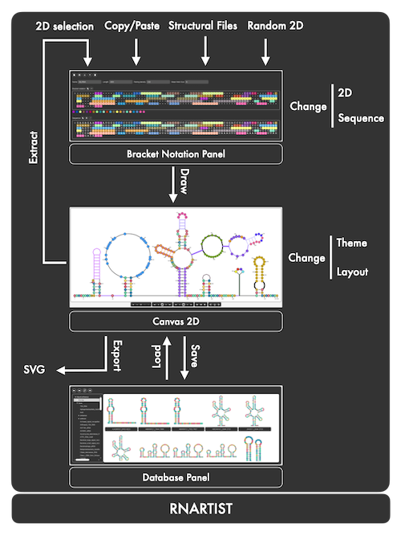

Table of contents
Quickstart
The graphical interface
RNArtist Documentation
Quickstart with RNArtist
Description of the graphical user interface
the upper panel
the theme panel for the full 2D
the theme panel for the 2D selections
the junction layout panel
the canvas 2D
the lower panel
the bracket notation panel
the database panel
the charts panel
(to come)
the documentation panel
The concept of RNArtist database
The concept of RNA 2D in RNArtist

The basic workflow in RNArtist